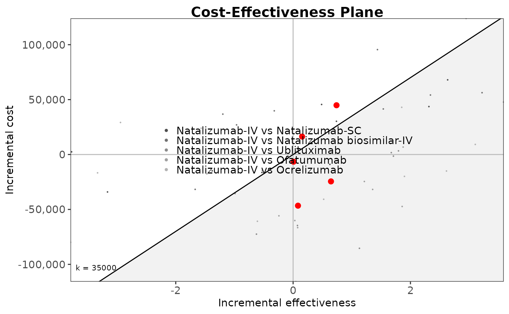

msdes
Ayman Sadek
October 22, 2026
msdes.RmdIntroduction
This document runs the MS discrete event simulation model. for now a dummy vignette to test if works or would need to switch to article type.
Main options
Load the required packages
library(msdes)
library(WARDEN)
library(MASS)
library(VGAM)
#> Loading required package: stats4
#> Loading required package: splines
library(utils)
library(flexsurv)
#> Loading required package: survival
#>
#> Attaching package: 'flexsurv'
#> The following objects are masked from 'package:VGAM':
#>
#> AICc, dgompertz, pgompertz, qgompertz, rgompertz
library(hesim)
library(purrr)
library(rlang)
#>
#> Attaching package: 'rlang'
#> The following objects are masked from 'package:purrr':
#>
#> flatten, flatten_chr, flatten_dbl, flatten_int, flatten_lgl,
#> flatten_raw, invoke, splice
library(progressr)
library(data.table)
#>
#> Attaching package: 'data.table'
#> The following object is masked from 'package:rlang':
#>
#> :=
#> The following object is masked from 'package:purrr':
#>
#> transpose
#> The following object is masked from 'package:base':
#>
#> %notin%
library(BCEA)
#> Registered S3 method overwritten by 'BCEA':
#> method from
#> plot.evppi voi
#> The BCEA version loaded is: 2.4.83 (stable version)
#> A development version is available at https://giabaio.r-universe.dev/BCEA
#>
#> Attaching package: 'BCEA'
#> The following object is masked from 'package:graphics':
#>
#> contour
library(voi)
#>
#> Attaching package: 'voi'
#> The following object is masked from 'package:BCEA':
#>
#> evppimodel setup
Data is loaded in the function gen_inputs(), below is the data contained within this function
#summarise_ce_results() # Function to summarise the cost effectiveness results
#summarise_samples() # Function to summarise any data
#run_sim_parallel_new() Function includes input matrix for EVPPI and EVSI
## set a seed
n_seed<-243523452
set.seed(n_seed)
## number of patients and samples
n_patients <- 10
n_samples <- 10
## Treatments at second line
v_treatment_names <- c("Natalizumab-IV",
"Natalizumab-SC",
"Natalizumab biosimilar-IV",
"Natalizumab biosimilar-SC",
"Cladribine",
"Ublituximab" ,
"Ofatumumab",
"Ocrelizumab")
## number of treatments
n_treatments <- length(v_treatment_names)
## specify codes for the treatments
v_treatment_codes <- c(seq(1, n_treatments))
names(v_treatment_codes) <- v_treatment_names
## Treatments that patients can move to at 3rd and higher line
v_higher_line_treatments <- c("Natalizumab-IV",
"Natalizumab-SC",
"Natalizumab biosimilar-IV",
"Natalizumab biosimilar-SC",
"Cladribine",
"Ublituximab",
"Ofatumumab",
"Ocrelizumab"
)
v_higher_line_treatment_codes <- c(seq(1, length(v_higher_line_treatments)))
names(v_higher_line_treatment_codes) <- v_higher_line_treatments
## prior treatment index
v_prior_treatment_indices <- c(rep(0, length(v_higher_line_treatments)))
names(v_prior_treatment_indices) <- v_higher_line_treatments
## Model event states
v_event_names <- c("initialise","age" , "relapse", "edss_increase", "edss_decrease", "progression", "treatment_switch", "annual_treatment", "serious_adverse_event", "death"
)
## Define the possible EDSS values
v_edss_values <- c(0:9)
names(v_edss_values) <- paste("EDSS", v_edss_values)
# Number of EDSS categories
n_edss_values <- length(v_edss_values)Load Data
Data is loaded in the function gen_inputs(), below is the data contained within this function
#load the functions required for the analysis
#devtools::load_all() # load all functions
#Function to generate inputs, the same for both packages
#source("R/generate_inputs.R")
## Model inputs generated using the generate inputs function
# saves the input in a list
# setwd("C:/Users/po22525/University of Bristol/grp-Bristol TAG - MTA-MS - MTA-MS/Working Folder_HE/MS Models/Git Repo/msdes")
#Function to generate inputs, the same for both packages
#source("R/generate_inputs.R")
## Model inputs generated using the generate inputs function
# saves the input in a list
inputs <- gen_inputs(
# change model settings or assumptions used in scenario analyses
drc= 0.035, #3.5% discount rate for costs
drq= 0.035, #3.5% discount rate for qalys
time_horizon = 70, # number of years model is running for starting at intial age
p_eid=0.6, # proportion of patients on external interval dosing
jcvtest_cost= 0 #assumed free due to home service, test cost could be £247 privately but not offered in the NHS
)
# Global parameters of the model as they are common to all patients and treatments
indicators <-1
common_all_inputs <- gen_common_all_inputs()
# patient parameters reflecting heterogeneous characteristics that depend on treatment
unique_pt_inputs <- gen_unique_pt_inputs()
# Generate initial events and reaction events
# Add time to event for each patient for each of the treatments
# Setting trt to all treatments should mean that the event applies to all treatments
init_event_list <- gen_init_events(RRMS_events=v_event_names)
evt_react_list <- gen_react_events(RRMS_events=v_event_names)
#util_ongoing_list <- gen_util_ongoing(dmt=v_treatment_names, severity = v_edss_values, RRMS_events=v_event_names)
util_ongoing <- "utilities_disease"
cost_ongoing <- "costs_disease"
util_instant <- c("utilities_relapse", "utilities_sae")
cost_instant <- c("costs_treatment", "costs_relapse", "costs_sae")Run Model
model is run
#environment(run_sim_parallel_new) <- asNamespace("WARDEN")
environment(run_sim_new) <- asNamespace("WARDEN")
# Run the simulation
#Logic is: per patient, per intervention, per event, react to that event.
total_runtime <- system.time({
results <- run_sim_new( # use run_sim_parallel() for more than 1 simulation, although I've experienced errors
npats = n_patients, # number of patients to be simulated
n_sim = n_samples, # number of simulations to run
psa_bool = TRUE, # use PSA or not. If n_sim > 1 and psa_bool = FALSE, then difference in outcomes is due to sampling (number of pats simulated)
debug = FALSE,
sensitivity_bool= FALSE, # sensitivity analysis not implemented,
arm_list = v_treatment_names, # intervention list
common_all_inputs = common_all_inputs, # inputs common that do not change within a simulation
#common_pt_inputs = common_pt_inputs, # inputs that change within a simulation but are not affected by the intervention
unique_pt_inputs = unique_pt_inputs, # inputs that change within a simulation between interventions
init_event_list = init_event_list, # initial event list
evt_react_list = evt_react_list, # reaction of events
util_ongoing_list = util_ongoing, # ongoing rrms or spms disease utilities
cost_ongoing_list = cost_ongoing, # ongoing rrms or spms disease costs
util_instant_list = util_instant,
cost_instant_list = cost_instant, # instantaneous treatment costs
input_out=c("age", "sex", "spms_flag", "edss_value", "n_relapse", "n_sae_evts", "n_edssinc_evts", "n_edssdec_evts", "current_treatment_code",
"treatment_line", "n_switch", "years_on_treatment", "treatment_stop", "t_2ndline", "t_3rdline", "t_4thline", "waning"),
# v_random_seed_sequence = c(1:n_samples), # Sequence of random seeds
save_input_matrix = TRUE # Export the input matrix for EVPPI
)
})
#> Analysis number: 1
#> Simulation number: 1
#> Time to run simulation 1: 1.05s
#> Simulation number: 2
#> Time to run simulation 2: 1.16s
#> Simulation number: 3
#> Time to run simulation 3: 1.01s
#> Simulation number: 4
#> Time to run simulation 4: 1s
#> Simulation number: 5
#> Time to run simulation 5: 1.12s
#> Simulation number: 6
#> Time to run simulation 6: 1.25s
#> Simulation number: 7
#> Time to run simulation 7: 1.01s
#> Simulation number: 8
#> Time to run simulation 8: 0.96s
#> Simulation number: 9
#> Time to run simulation 9: 1.01s
#> Simulation number: 10
#> Time to run simulation 10: 1.04s
#> Time to run analysis 1: 10.61s
#> Total time to run: 10.61s
#> Simulation finalized;Plot Results
# Summarise the results
dim_results <- c(n_samples, n_treatments, n_patients)
trt_idx <- setNames(seq_along(v_treatment_names), v_treatment_names)
total_costs_ipd <- total_qalys_ipd <- array(
NA_real_,
dim = dim_results,
dimnames = list(NULL, v_treatment_names, NULL)
)
for (i_sample in seq_len(n_samples)) {
df <- results[[1]][[i_sample]]$merged_df
# Keep only final ("death") rows
df <- df[df$evtname == "death", ]
idx <- cbind(
i_sample,
trt_idx[df$arm],
df$pat_id
)
total_costs_ipd[idx] <- df$total_costs
total_qalys_ipd[idx] <- df$total_qalys
}
options(scipen = 999)
total_costs <- apply(total_costs_ipd, c(1, 2), mean)
total_qalys <- apply(total_qalys_ipd, c(1, 2), mean)
#drop natalizumab-biosimilar-SC and cladrebiene
total_costs <- total_costs[,-c(4,5)]
total_qalys <- total_qalys[,-c(4,5)]
results_table <- summarise_ce_results(wtp1 = 25000, wtp2 = 35000,
total_qalys = total_qalys,
total_costs = total_costs,
reference = "Natalizumab-IV")
knitr::kable(results_table) | Total costs (95% CrI) | Total QALYs (95% CrI) | Net benefit at £25000/QALY (95% CrI) | Net benefit at £35000/QALY (95% CrI) | Incremental costs (95% CrI) | Incremental QALYs (95% CrI) | INB at £25000/QALY (95% CrI) | INB at £35000/QALY (95% CrI) | CEAC at £25000/QALY (95% CrI) | CEAC at £35000/QALY (95% CrI) | |
|---|---|---|---|---|---|---|---|---|---|---|
| Natalizumab-IV | 350,087.83 (305,986.55, 404,112.50) | 9.47 (7.78, 11.27) | -113,352.24 (-173,052.55, -27,495.65) | -18,658.00 (-92,134.41, 83,900.71) | 0.00 (0.00, 0.00) | 0.00 (0.00, 0.00) | 0.00 (0.00, 0.00) | 0.00 (0.00, 0.00) | 0.2 | 0.3 |
| Natalizumab-SC | 308,420.14 (257,195.67, 347,549.23) | 8.69 (6.09, 10.72) | -91,045.19 (-145,788.57, -15,833.05) | -4,095.21 (-84,902.41, 87,959.10) | -41,667.70 (-109,838.51, 22,753.11) | -0.77 (-3.11, 1.56) | 22,307.05 (-18,981.04, 62,584.38) | 14,562.79 (-48,830.31, 73,813.71) | 0.3 | 0.2 |
| Natalizumab biosimilar-IV | 333,512.62 (298,599.82, 363,665.80) | 9.32 (5.15, 12.96) | -100,520.23 (-201,924.20, -24,329.92) | -7,323.27 (-150,443.50, 103,427.12) | -16,575.22 (-63,264.88, 30,022.62) | -0.15 (-3.36, 3.62) | 12,832.01 (-37,223.92, 84,997.27) | 11,334.73 (-67,587.23, 121,244.23) | 0.2 | 0.2 |
| Ublituximab | 356,696.85 (318,927.43, 380,577.63) | 9.46 (6.34, 12.79) | -120,149.71 (-198,893.85, -57,033.82) | -25,530.86 (-135,458.98, 67,935.66) | 6,609.02 (-39,749.02, 56,197.10) | -0.0075 (-2.99, 3.22) | -6,797.48 (-77,624.13, 93,886.67) | -6,872.86 (-104,726.45, 124,047.56) | 0.3 | 0.3 |
| Ofatumumab | 374,415.43 (332,270.68, 421,737.65) | 8.82 (7.17, 10.21) | -153,874.53 (-229,529.64, -81,441.11) | -65,658.18 (-155,130.72, 19,517.41) | 24,327.59 (-37,163.68, 63,718.05) | -0.65 (-1.87, 0.45) | -40,522.30 (-87,138.63, 22,074.28) | -47,000.18 (-103,734.82, 16,743.38) | 0 | 0 |
| Ocrelizumab | 399,164.83 (340,270.16, 442,365.77) | 9.38 (6.75, 12.81) | -164,753.03 (-218,884.78, -102,187.02) | -70,988.31 (-146,904.62, 20,730.03) | 49,076.99 (-3,189.51, 108,555.98) | -0.093 (-1.78, 3.14) | -51,400.79 (-115,904.19, 8,933.74) | -52,330.31 (-123,337.63, 38,547.14) | 0 | 0 |
#write.csv(results_table, paste0(c("results/results warden determenistic", n_samples, "x", n_patients, ".csv"), collapse = " "))
#plot results
v_results_treatment_names<- v_treatment_names[-c(4,5)]
# Create a BCEA object
des_bcea <- bcea(eff = total_qalys,
cost = total_costs,
ref = 1,
interventions = v_results_treatment_names)
ceplane.plot(des_bcea, wtp = 35000,
graph = "ggplot2")
#plot a CEAC
des_multi_ce <- multi.ce(des_bcea)
ceac.plot(des_multi_ce, graph = "ggplot2",
line = list(color = c("darkorange", "palegreen3", "blue", "grey",
"cyan3", "black"),
size=2 ),
#ylim=c(0, 0.5),
pos = c(1, 1)
)
#compare key events by treatment groups
modelresults_summarised <- summary_results_sim(results[[1]])
proportion_spms <- modelresults_summarised["spms_flag",]
average_numberof_relapses <- modelresults_summarised["n_relapse",]
average_numberof_edssincreases <- modelresults_summarised["n_edssinc_evts",]
average_numberof_edssdecreases<- modelresults_summarised["n_edssdec_evts",]
average_numberof_saes<- modelresults_summarised["n_sae_evts",]
final_edss_value <- modelresults_summarised["edss_value",]
average_numberof_treatmentswitches <- modelresults_summarised["n_switch",]
average_numberof_yearsontreatment <- modelresults_summarised["years_on_treatment",]
average_numberof_yearson2ndline<- modelresults_summarised["t_2ndline",]
average_numberof_yearson3rdline<- modelresults_summarised["t_3rdline",]
average_numberof_yearson4thline<- modelresults_summarised["t_4thline",]
key_events_trt_grps <- as.data.frame(rbind(
proportion_spms, average_numberof_relapses,
average_numberof_edssincreases, average_numberof_edssdecreases,
final_edss_value, average_numberof_saes,
average_numberof_treatmentswitches, average_numberof_yearsontreatment,
average_numberof_yearson2ndline, average_numberof_yearson3rdline,
average_numberof_yearson4thline),
row.names=c("proportion with spms", "average no. of relapses",
"average no. of edss increases", "average no. of edss decreases",
"final edss value", "average no. of SAEs",
"average no. of treatment switches", "average no. of years on treatment",
"average no. of years on 2ndline", "average no. of years on 3rdline",
"average no. of years on 4thline")
)
knitr::kable(key_events_trt_grps)| Natalizumab-IV | Natalizumab-SC | Natalizumab biosimilar-IV | Natalizumab biosimilar-SC | Cladribine | Ublituximab | Ofatumumab | Ocrelizumab | |
|---|---|---|---|---|---|---|---|---|
| proportion with spms | 0.29 (0.1; 0.5) | 0.33 (0.1; 0.6) | 0.34 (0.1; 0.8) | 0.25 (0; 0.6) | 0.35 (0.2; 0.7) | 0.34 (0.1; 0.5) | 0.35 (0.2; 0.5) | 0.27 (0; 0.5) |
| average no. of relapses | 2.45 (1; 4.3) | 2.13 (1.2; 3.7) | 2.47 (0.8; 4.1) | 2.21 (0.9; 3.2) | 2.46 (1.3; 3.6) | 2.21 (0.7; 3.3) | 2.47 (1; 4.2) | 2.55 (1.3; 5) |
| average no. of edss increases | 2.63 (1.4; 4) | 2.33 (1; 4.1) | 2.22 (1.1; 3.6) | 2.55 (1.2; 4.5) | 2.97 (1.2; 6.3) | 2.68 (1.1; 3.7) | 2.36 (0.9; 4) | 2.36 (1.4; 3.8) |
| average no. of edss decreases | 1.71 (1.4; 2.2) | 1.59 (1.2; 2) | 1.5 (1; 1.9) | 1.65 (1.4; 2) | 1.62 (1; 2.8) | 1.6 (1.1; 2.2) | 1.54 (1; 2.2) | 1.65 (1; 2.2) |
| final edss value | 4.65 (3; 5.7) | 4.63 (3.2; 6.2) | 4.65 (3.6; 6.2) | 4.67 (2.8; 5.9) | 5.16 (4; 6.7) | 4.74 (2.9; 5.9) | 4.74 (3.9; 5.9) | 4.62 (3.1; 6) |
| average no. of SAEs | 3.99 (2.2; 7) | 3.65 (2.8; 7) | 4.58 (2.6; 6.5) | 4.07 (3.2; 5.9) | 4.04 (2.7; 6.4) | 3.99 (2.5; 7.3) | 7.39 (3.4; 20.7) | 4.4 (2.4; 6.6) |
| average no. of treatment switches | 1.09 (0.3; 1.9) | 1.19 (0.7; 1.8) | 1.11 (0.6; 1.9) | 1.17 (0.6; 1.8) | 1.13 (0.6; 1.7) | 1.12 (0.4; 1.7) | 1.24 (0.5; 2.2) | 1.11 (0.6; 1.9) |
| average no. of years on treatment | 20.57 (14.7; 32.6) | 18.08 (8.3; 23.8) | 20.56 (11.8; 35.2) | 19.15 (12.2; 30.7) | 14.85 (3.3; 23.3) | 17.96 (9.9; 24.6) | 19.47 (9.7; 22.6) | 17.88 (11.2; 24.3) |
| average no. of years on 2ndline | 19.34 (11.2; 32.2) | 16.39 (9.9; 24.5) | 17.54 (6.4; 32.4) | 18.67 (13.1; 28.1) | 14.5 (7.7; 19.4) | 17.28 (7.5; 26.7) | 15.51 (10.1; 21.2) | 17.97 (9; 28) |
| average no. of years on 3rdline | 6.89 (1.4; 12.1) | 5.47 (2.1; 9.7) | 5.78 (2; 14.2) | 6.21 (0.6; 14.2) | 5.28 (1.6; 13.7) | 6.42 (2.8; 14.6) | 6.1 (2.3; 15.7) | 6.67 (2.8; 11.4) |
| average no. of years on 4thline | 4.64 (0.9; 12) | 5.16 (0; 15.6) | 3.91 (0; 9.6) | 4.71 (1.8; 7.7) | 3.52 (0; 7.2) | 4.16 (0; 6.7) | 5.1 (0; 12) | 4.26 (0.2; 6.9) |
# VOI analysis
#total EVPI
total_evpi <- voi::evpi(outputs = list(c = total_costs,
e = total_qalys,
k = c(0, 25000, 50000, 75000, 100000)))
knitr::kable(total_evpi)| k | evpi |
|---|---|
| 0 | 6609.939 |
| 25000 | 20786.200 |
| 50000 | 73549.324 |
| 75000 | 117721.152 |
| 100000 | 161978.456 |
plot(x=total_evpi$k, y=total_evpi$evpi, type="l")
# Total EVPPI
# All parameters excluding hazard ratios that are constant as it causes errors
# df_inputs <- as.data.frame(results[["input_matrix"]][,-c(73:76,81:84,89:92,79:101)])
# parameters <- as.list(colnames(df_inputs))
#
# total_evppi <- voi::evppi(outputs = list(c = total_costs,
# e = total_qalys,
# k = c(25000, 35000)),
# inputs = df_inputs,
# pars = parameters,
# method = "bart",
# verbose = TRUE)
#
# knitr::kable(total_evppi)
#
# #plot in base R split ober A and B panels as there are too many parameters to plot
# total_evppi_25k_a <- total_evppi$evppi[total_evppi$k ==25000 & total_evppi$evppi > mean(total_evppi$evppi)]
# names(total_evppi_25k_a) <- total_evppi$pars[total_evppi$k ==25000 & total_evppi$evppi > mean(total_evppi$evppi)]
# par(las=1, bg="white", mai=c(0.85, 4, 0.5, 0.5))
# barplot(
# sort(total_evppi_25k_a, decreasing=FALSE), horiz = TRUE, cex.names=0.9, main="EVPPI WTP 25,000/QALY (A)", xlab= "£"
# )
#
# total_evppi_25k_b <- total_evppi$evppi[total_evppi$k ==25000 & total_evppi$evppi < mean(total_evppi$evppi)]
# names(total_evppi_25k_b) <- total_evppi$pars[total_evppi$k ==25000 & total_evppi$evppi < mean(total_evppi$evppi)]
# barplot(
# sort(total_evppi_25k_b, decreasing=FALSE), horiz = TRUE, cex.names=0.6, main="EVPPI WTP 25,000/QALY (B)", xlab= "£"
# )
#
# total_evppi_35k_a <- total_evppi$evppi[total_evppi$k ==35000 & total_evppi$evppi > mean(total_evppi$evppi)]
# names(total_evppi_35k_a) <- total_evppi$pars[total_evppi$k ==35000 & total_evppi$evppi > mean(total_evppi$evppi)]
# par(las=1, bg="white", mai=c(0.85, 4, 1, 0.5))
# barplot(
# sort(total_evppi_35k_a, decreasing=FALSE), horiz = TRUE, cex.names=0.5, main="EVPPI WTP 35,000/QALY (A)", xlab= "£"
# )
#
# total_evppi_35k_b <- total_evppi$evppi[total_evppi$k ==35000 & total_evppi$evppi < mean(total_evppi$evppi)]
# names(total_evppi_35k_b) <- total_evppi$pars[total_evppi$k ==35000 & total_evppi$evppi < mean(total_evppi$evppi)]
# par(las=1, bg="white", mai=c(0.85, 4, 1, 0.5))
# barplot(
# sort(total_evppi_35k_b, decreasing=FALSE), horiz = TRUE, cex.names=0.6, main="EVPPI WTP 35,000/QALY (B)",xlab= "£"
# )